Mục lục:
try/except + showerror → bind('<Return>') → nút Xóa.| Mẹo | Chi tiết |
|---|---|
| Tìm nhanh | Bấm / để gõ vào ô tìm kiếm. Gõ không dấu cũng được: xoa dong tìm ra Xóa dòng. |
| Copy | Mỗi khung code có nút Copy ở góc phải. |
| File dữ liệu | Luôn open(..., encoding="utf-8"). Thêm os.chdir(...) ở đầu file để không lỗi đường dẫn. |
import tkinter as tk
from tkinter import ttk, messagebox, filedialog
import sqlite3
import os, re
from datetime import datetime
# Chạy ở đâu cũng tìm thấy khoa.txt / file .db nằm cạnh file .py
os.chdir(os.path.dirname(os.path.abspath(__file__)))"end", "w", "left", "x", "both"... chạy được với MỌI kiểu import.| Cách import | Viết widget | Hằng số |
|---|---|---|
import tkinter as tk | tk.Label(...) | tk.END, tk.W hoặc chuỗi "end", "w" |
from tkinter import * | Label(...) | END, W, LEFT |
| ttk & messagebox | luôn phải import riêng | from tkinter import ttk, messagebox |
CREATE TABLE → các ô trên form → kiemtra() → lay_form() (đúng thứ tự cột) → câu UPDATE → chon_dong() → cot/tieude/dorong.? trong INSERT = số cột. lay_form() trả về tuple đúng thứ tự cột trong CREATE TABLE.import tkinter as tk
from tkinter import ttk, messagebox
import sqlite3, os
os.chdir(os.path.dirname(os.path.abspath(__file__)))
# ================= CSDL =================
con = sqlite3.connect("quanly.db")
cur = con.cursor()
cur.execute("""CREATE TABLE IF NOT EXISTS sinhvien(
ma TEXT PRIMARY KEY, ten TEXT, gioitinh TEXT,
khoa TEXT, sothich TEXT, diem REAL)""")
con.commit()
# ================= GIAO DIỆN =================
window = tk.Tk()
window.title("Quản lý sinh viên")
window.geometry("900x580")
frm = tk.LabelFrame(window, text="Thông tin sinh viên", padx=10, pady=10)
frm.pack(fill="x", padx=10, pady=5) # window: dùng pack cho các khung lớn
# --- Cột trái: Entry (bên trong frm: chỉ dùng grid) ---
tk.Label(frm, text="Mã SV:").grid(row=0, column=0, sticky="w")
txtMa = tk.Entry(frm, width=25)
txtMa.grid(row=0, column=1, pady=3)
tk.Label(frm, text="Họ tên:").grid(row=1, column=0, sticky="w")
txtTen = tk.Entry(frm, width=25)
txtTen.grid(row=1, column=1, pady=3)
tk.Label(frm, text="Điểm:").grid(row=2, column=0, sticky="w")
txtDiem = tk.Entry(frm, width=25)
txtDiem.grid(row=2, column=1, pady=3)
# --- Cột phải: Radiobutton / Combobox / Checkbutton ---
tk.Label(frm, text="Giới tính:").grid(row=0, column=2, sticky="w", padx=(30, 5))
gioitinh = tk.StringVar(value="") # "" = chưa chọn
frmGT = tk.Frame(frm)
frmGT.grid(row=0, column=3, sticky="w")
tk.Radiobutton(frmGT, text="Nam", value="Nam", variable=gioitinh).pack(side="left")
tk.Radiobutton(frmGT, text="Nữ", value="Nữ", variable=gioitinh).pack(side="left")
tk.Label(frm, text="Khoa:").grid(row=1, column=2, sticky="w", padx=(30, 5))
ds_khoa = []
if os.path.exists("khoa.txt"):
f = open("khoa.txt", encoding="utf-8")
for dong in f.read().splitlines():
if dong.strip() != "":
ds_khoa.append(dong.strip())
f.close()
cbKhoa = ttk.Combobox(frm, values=ds_khoa, state="readonly", width=25)
cbKhoa.grid(row=1, column=3, sticky="w")
tk.Label(frm, text="Sở thích:").grid(row=2, column=2, sticky="w", padx=(30, 5))
thethao = tk.IntVar()
amnhac = tk.IntVar()
docsach = tk.IntVar()
frmST = tk.Frame(frm)
frmST.grid(row=2, column=3, sticky="w")
tk.Checkbutton(frmST, text="Thể thao", variable=thethao).pack(side="left")
tk.Checkbutton(frmST, text="Âm nhạc", variable=amnhac).pack(side="left")
tk.Checkbutton(frmST, text="Đọc sách", variable=docsach).pack(side="left")
# ================= KIỂM TRA DỮ LIỆU =================
def kiemtra():
ma = txtMa.get().strip()
if len(ma) != 6 or ma[0] != "A" or not ma[1:].isdigit():
messagebox.showerror("Lỗi", "Mã SV phải dạng A + 5 chữ số (VD A45371)")
return False
if txtTen.get().strip() == "":
messagebox.showerror("Lỗi", "Chưa nhập họ tên")
return False
try:
diem = float(txtDiem.get())
if diem < 0 or diem > 10:
raise ValueError
except ValueError:
messagebox.showerror("Lỗi", "Điểm phải là số từ 0 đến 10")
return False
if gioitinh.get() == "":
messagebox.showerror("Lỗi", "Chưa chọn giới tính")
return False
if cbKhoa.get() == "":
messagebox.showerror("Lỗi", "Chưa chọn khoa")
return False
return True
def lay_sothich(): # -> "Thể thao, Đọc sách"
ds = []
if thethao.get() == 1:
ds.append("Thể thao")
if amnhac.get() == 1:
ds.append("Âm nhạc")
if docsach.get() == 1:
ds.append("Đọc sách")
return ", ".join(ds)
def lay_form(): # tuple 6 giá trị đúng thứ tự cột
return (txtMa.get().strip(), txtTen.get().strip(), gioitinh.get(),
cbKhoa.get(), lay_sothich(), float(txtDiem.get()))
# ================= XỬ LÝ =================
def load_data(tu_khoa=""):
for dong in tree.get_children():
tree.delete(dong)
cur.execute("SELECT * FROM sinhvien WHERE ma LIKE ? OR ten LIKE ? ORDER BY ma",
("%" + tu_khoa + "%", "%" + tu_khoa + "%"))
for row in cur.fetchall():
tree.insert("", "end", iid=row[0], values=row) # iid = mã
lblDem.config(text="Tổng: " + str(len(tree.get_children())) + " sinh viên")
def lammoi():
txtMa.config(state="normal")
txtMa.delete(0, "end")
txtTen.delete(0, "end")
txtDiem.delete(0, "end")
gioitinh.set("")
cbKhoa.set("")
thethao.set(0)
amnhac.set(0)
docsach.set(0)
txtMa.focus()
def them():
if not kiemtra():
return
try:
cur.execute("INSERT INTO sinhvien VALUES (?, ?, ?, ?, ?, ?)", lay_form())
con.commit()
except sqlite3.IntegrityError:
messagebox.showerror("Lỗi", "Mã sinh viên đã tồn tại!")
return
messagebox.showinfo("Thông báo", "Thêm thành công")
load_data()
lammoi()
def chon_dong(event=None):
chon = tree.selection()
if len(chon) == 0:
return
cur.execute("SELECT * FROM sinhvien WHERE ma = ?", (chon[0],)) # đọc lại từ CSDL
row = cur.fetchone() # (giữ số 0 đầu SĐT)
if row is None:
return
lammoi()
txtMa.insert(0, row[0])
txtMa.config(state="readonly") # không cho sửa khóa chính
txtTen.insert(0, row[1])
gioitinh.set(row[2])
cbKhoa.set(row[3])
thethao.set(1 if "Thể thao" in row[4] else 0)
amnhac.set(1 if "Âm nhạc" in row[4] else 0)
docsach.set(1 if "Đọc sách" in row[4] else 0)
txtDiem.insert(0, row[5])
def sua():
if len(tree.selection()) == 0:
messagebox.showwarning("Chú ý", "Hãy chọn dòng cần sửa")
return
if not kiemtra():
return
ma, ten, gt, khoa, st, diem = lay_form()
cur.execute("UPDATE sinhvien SET ten=?, gioitinh=?, khoa=?, sothich=?, diem=? WHERE ma=?",
(ten, gt, khoa, st, diem, ma))
con.commit()
messagebox.showinfo("Thông báo", "Sửa thành công")
load_data()
lammoi()
def xoa():
chon = tree.selection()
if len(chon) == 0:
messagebox.showwarning("Chú ý", "Hãy chọn dòng cần xóa")
return
if messagebox.askyesno("Xác nhận", "Xóa sinh viên " + chon[0] + "?"):
cur.execute("DELETE FROM sinhvien WHERE ma = ?", (chon[0],))
con.commit()
load_data()
lammoi()
def tim():
load_data(txtTim.get().strip())
def thoat():
if messagebox.askyesno("Thoát", "Bạn có muốn thoát?"):
con.close()
window.destroy()
# ================= NÚT + TÌM KIẾM =================
frmNut = tk.Frame(window)
frmNut.pack(pady=4)
tk.Button(frmNut, text="Thêm", width=10, command=them).pack(side="left", padx=3)
tk.Button(frmNut, text="Sửa", width=10, command=sua).pack(side="left", padx=3)
tk.Button(frmNut, text="Xóa", width=10, command=xoa).pack(side="left", padx=3)
tk.Button(frmNut, text="Làm mới", width=10, command=lammoi).pack(side="left", padx=3)
tk.Label(frmNut, text=" Tìm:").pack(side="left")
txtTim = tk.Entry(frmNut, width=20)
txtTim.pack(side="left")
tk.Button(frmNut, text="Tìm", width=8, command=tim).pack(side="left", padx=3)
txtTim.bind("<Return>", lambda e: tim())
# ================= TREEVIEW + THANH CUỘN =================
frmTree = tk.Frame(window)
frmTree.pack(fill="both", expand=True, padx=10, pady=5)
cot = ("ma", "ten", "gioitinh", "khoa", "sothich", "diem")
tieude = ("Mã SV", "Họ tên", "Giới tính", "Khoa", "Sở thích", "Điểm")
dorong = (80, 170, 70, 180, 170, 60)
tree = ttk.Treeview(frmTree, columns=cot, show="headings")
for i in range(len(cot)):
tree.heading(cot[i], text=tieude[i])
tree.column(cot[i], width=dorong[i], anchor="w")
sb = ttk.Scrollbar(frmTree, orient="vertical", command=tree.yview)
tree.configure(yscrollcommand=sb.set)
tree.pack(side="left", fill="both", expand=True)
sb.pack(side="right", fill="y")
tree.bind("<<TreeviewSelect>>", chon_dong)
lblDem = tk.Label(window, text="")
lblDem.pack(anchor="w", padx=10)
# ================= MENU + POPUP + NÚT X =================
menubar = tk.Menu(window)
filemenu = tk.Menu(menubar, tearoff=0)
filemenu.add_command(label="Làm mới", command=lammoi)
filemenu.add_separator()
filemenu.add_command(label="Thoát", command=thoat)
menubar.add_cascade(label="File", menu=filemenu)
window.config(menu=menubar)
popup = tk.Menu(window, tearoff=0)
popup.add_command(label="Sửa dòng này", command=sua)
popup.add_command(label="Xóa dòng này", command=xoa)
def hien_popup(event):
dong = tree.identify_row(event.y)
if dong != "":
tree.selection_set(dong)
popup.tk_popup(event.x_root, event.y_root)
popup.grab_release()
tree.bind("<Button-3>", hien_popup)
window.protocol("WM_DELETE_WINDOW", thoat)
load_data()
window.mainloop()[ cửa sổ khi chạy ]
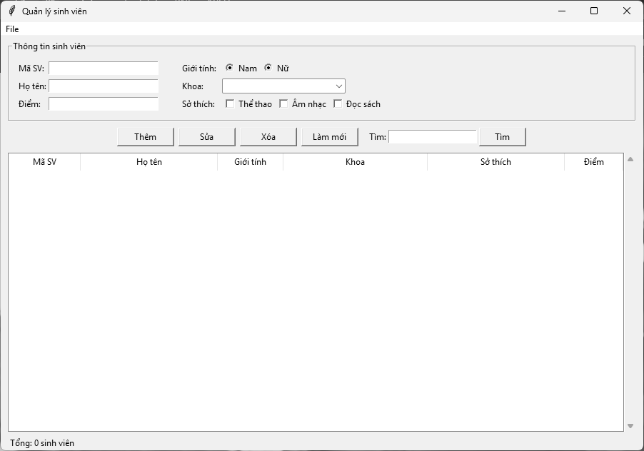
BAC và tinh_tien() là thành tiền nước / taxi / thuế TNCN.try/except, showerror, phím Enter, nút Xóa, phân cách hàng nghìn.import tkinter as tk
from tkinter import messagebox
BAC = [(50, 1800), (50, 1900), (100, 2200), (None, 2800)] # (số lượng của bậc, đơn giá); None = phần còn lại
def tinh_tien(so): # hàm tính RIÊNG -> dễ chấm, dễ kiểm tra
tien = 0
con_lai = so
for so_bac, gia in BAC:
if con_lai <= 0:
break
if so_bac is None or con_lai < so_bac:
dung = con_lai
else:
dung = so_bac
tien = tien + dung * gia
con_lai = con_lai - dung
return tien
def xu_ly(event=None): # event=None: dùng được cho cả nút và phím Enter
try:
so = int(txtSo.get())
if so < 0:
raise ValueError
except ValueError:
messagebox.showerror("Lỗi", "Phải nhập số nguyên không âm!")
xoa()
return
tien = tinh_tien(so)
vat = tien * 0.1
lblTien.config(text=f"{tien:,.0f} đ")
lblVat.config(text=f"{vat:,.0f} đ")
lblTong.config(text=f"{tien + vat:,.0f} đ")
def xoa():
txtSo.delete(0, "end")
lblTien.config(text="")
lblVat.config(text="")
lblTong.config(text="")
txtSo.focus()
window = tk.Tk()
window.title("Tính tiền điện")
window.resizable(False, False)
tk.Label(window, text="TÍNH TIỀN ĐIỆN", font=("Arial", 16, "bold")).grid(row=0, column=0, columnspan=3, pady=10)
tk.Label(window, text="Số kWh:").grid(row=1, column=0, sticky="w", padx=10)
txtSo = tk.Entry(window, width=20)
txtSo.grid(row=1, column=1, columnspan=2, sticky="w")
tk.Label(window, text="Tiền điện:").grid(row=2, column=0, sticky="w", padx=10)
lblTien = tk.Label(window, text="", fg="blue")
lblTien.grid(row=2, column=1, sticky="w")
tk.Label(window, text="VAT 10%:").grid(row=3, column=0, sticky="w", padx=10)
lblVat = tk.Label(window, text="", fg="blue")
lblVat.grid(row=3, column=1, sticky="w")
tk.Label(window, text="Tổng:").grid(row=4, column=0, sticky="w", padx=10)
lblTong = tk.Label(window, text="", fg="red", font=("Arial", 11, "bold"))
lblTong.grid(row=4, column=1, sticky="w")
tk.Button(window, text="Tính", width=10, command=xu_ly).grid(row=5, column=1, pady=10)
tk.Button(window, text="Xóa", width=10, command=xoa).grid(row=5, column=2, pady=10, padx=10)
window.bind("<Return>", xu_ly)
txtSo.focus()
window.mainloop()[ cửa sổ khi chạy ]
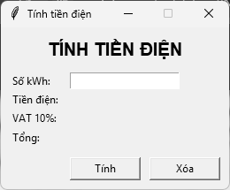
self., mọi hàm xử lý là method có self.command=lambda p=pt: self.tinh(p): truyền tham số cho hàm của nút (không có p=pt thì nút nào cũng thành phép cuối).import tkinter as tk
from tkinter import messagebox
class App:
def __init__(self, root):
self.root = root
root.title("Máy tính")
tk.Label(root, text="Số a:").grid(row=0, column=0, sticky="w")
self.txtA = tk.Entry(root)
self.txtA.grid(row=0, column=1)
tk.Label(root, text="Số b:").grid(row=1, column=0, sticky="w")
self.txtB = tk.Entry(root)
self.txtB.grid(row=1, column=1)
self.lblKQ = tk.Label(root, text="Kết quả:", fg="blue")
self.lblKQ.grid(row=3, column=0, columnspan=4, sticky="w")
cot = 0
for pt in ["+", "-", "*", "/"]:
# lambda p=pt: ghi nhớ phép tính của TỪNG nút
tk.Button(root, text=pt, width=5,
command=lambda p=pt: self.tinh(p)).grid(row=2, column=cot, pady=5)
cot = cot + 1
def tinh(self, pt):
try:
a = float(self.txtA.get())
b = float(self.txtB.get())
if pt == "+":
kq = a + b
elif pt == "-":
kq = a - b
elif pt == "*":
kq = a * b
else:
kq = a / b
self.lblKQ.config(text=f"Kết quả: {kq:g}")
except ValueError:
messagebox.showerror("Lỗi", "Phải nhập số!")
except ZeroDivisionError:
messagebox.showerror("Lỗi", "Không chia được cho 0!")
if __name__ == "__main__":
root = tk.Tk()
app = App(root)
root.mainloop()[ cửa sổ khi chạy ]
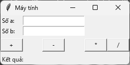
window = tk.Tk()
window.title("Tiêu đề")
window.geometry("800x500") # rộng x cao
window.geometry("800x500+200+100") # + vị trí x, y trên màn hình
window.resizable(False, False) # không cho kéo giãn
window.configure(bg="lightblue") # màu nền
window.minsize(400, 300)
window.mainloop() # LUÔN là dòng cuối[ cửa sổ khi chạy ]
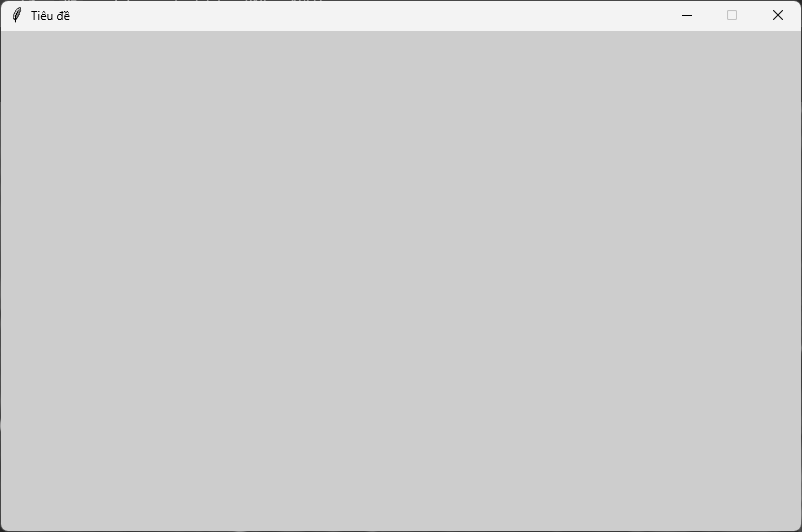
command=ham KHÔNG có ngoặc. Viết command=ham() là hàm chạy ngay lúc mở chương trình.lbl = tk.Label(window, text="Họ tên:", font=("Arial", 12, "bold"), fg="red", bg="white")
lbl.config(text="Nội dung mới") # đổi chữ
lbl.cget("text") # đọc chữ
txt = tk.Entry(window, width=30) # show="*" để nhập mật khẩu
txt.get() # -> CHUỖI (muốn số thì int()/float())
txt.delete(0, "end") # xóa hết
txt.insert(0, "abc") # chèn vào đầu
txt.focus() # đặt con trỏ
txt.config(state="readonly") # "normal" | "readonly" | "disabled"
btn = tk.Button(window, text="OK", width=10, bg="green", fg="white", command=ham)
btn.config(state="disabled") # khóa nút[ cửa sổ khi chạy ]
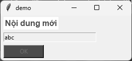
"1.0", KHÔNG dùng 0 như Entry.t = tk.Text(window, width=40, height=5)
noi_dung = t.get("1.0", "end").strip() # dòng 1, ký tự 0 -> hết
t.delete("1.0", "end")
t.insert("end", "Dòng mới\n")
t.config(state="disabled") # chỉ đọc[ cửa sổ khi chạy ]
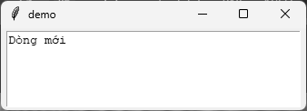
gt = tk.StringVar(value="") # "" = chưa chọn; value="Nam" = chọn sẵn
tk.Radiobutton(window, text="Nam", value="Nam", variable=gt).grid(row=0, column=1)
tk.Radiobutton(window, text="Nữ", value="Nữ", variable=gt).grid(row=0, column=2)
gt.get() # "Nam" / "Nữ" / ""
gt.set("") # bỏ chọn[ cửa sổ khi chạy ]
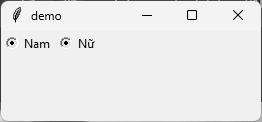
tt = tk.IntVar() # 1 = tick, 0 = không
an = tk.IntVar()
tk.Checkbutton(window, text="Thể thao", variable=tt).grid(row=1, column=1)
tk.Checkbutton(window, text="Âm nhạc", variable=an).grid(row=1, column=2)
ds = []
if tt.get() == 1: ds.append("Thể thao")
if an.get() == 1: ds.append("Âm nhạc")
chuoi = ", ".join(ds) # lưu CSDL: "Thể thao, Âm nhạc"
tt.set("Thể thao" in chuoi) # nạp lại từ chuỗi[ cửa sổ khi chạy ]
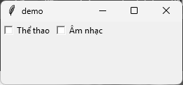
state="readonly": chỉ cho chọn, không cho gõ.cb = ttk.Combobox(window, values=["CNTT", "Kinh tế"], state="readonly", width=25)
cb.grid(row=2, column=1)
cb.current(0) # chọn phần tử đầu
cb.get() # giá trị đang chọn ("" nếu chưa chọn)
cb.set("") # bỏ chọn
cb["values"] = ds_moi # đổi danh sách
def khi_chon(event):
print(cb.get())
cb.bind("<<ComboboxSelected>>", khi_chon)[ cửa sổ khi chạy ]
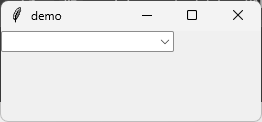
ds = ["Hà Nội", "Huế", "TP.HCM"]
bien = tk.StringVar(value=ds[0])
tk.OptionMenu(window, bien, *ds).grid(row=0, column=1) # dấu * bắt buộc
bien.get()
sp = tk.Spinbox(window, from_=1, to=100, width=5) # from_ có dấu _
int(sp.get()) # get() trả về chuỗi
v = tk.IntVar(value=50)
tk.Scale(window, from_=0, to=100, orient="horizontal", variable=v).grid(row=2, column=1)
v.get()[ cửa sổ khi chạy ]
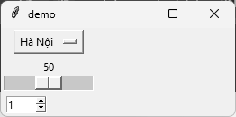
lb = tk.Listbox(window, height=6, width=30) # selectmode="multiple" để chọn nhiều
lb.grid(row=0, column=0)
lb.insert("end", "Táo") # thêm cuối
lb.get(0, "end") # tuple tất cả phần tử
lb.size() # số phần tử
chon = lb.curselection() # tuple CHỈ SỐ đang chọn, vd (2,)
if chon:
lb.get(chon[0]) # giá trị dòng chọn
lb.delete(chon[0]) # xóa dòng chọn
lb.delete(0, "end") # xóa hết
lb.bind("<<ListboxSelect>>", ham)[ cửa sổ khi chạy ]
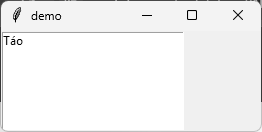
khung = tk.LabelFrame(window, text="Thông tin", padx=10, pady=10)
khung.grid(row=0, column=0, padx=10, pady=10, sticky="nsew")
tk.Label(khung, text="Mã:").grid(row=0, column=0) # widget con: master = khung
def mo_cua_so_phu():
win2 = tk.Toplevel(window) # KHÔNG tạo tk.Tk() thứ 2
win2.title("Chi tiết")
win2.geometry("300x150")
win2.grab_set() # khóa cửa sổ chính tới khi đóng win2
tk.Label(win2, text="Xin chào").pack(pady=10)
tk.Button(win2, text="Đóng", command=win2.destroy).pack()[ cửa sổ khi chạy ]
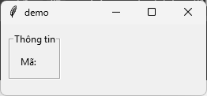
img = tk.PhotoImage(file="logo.png") # png/gif; jpg cần thư viện PIL
lbl = tk.Label(window, image=img)
lbl.image = img # GIỮ tham chiếu, không ảnh biến mất
lbl.grid(row=0, column=0)
cv = tk.Canvas(window, width=300, height=200, bg="white")
cv.grid(row=1, column=0)
cv.create_line(0, 0, 300, 200, fill="red", width=2)
cv.create_rectangle(20, 20, 120, 80, fill="yellow")
cv.create_oval(150, 50, 250, 150, outline="blue")
cv.create_text(150, 180, text="Canvas", font=("Arial", 14))
cv.delete("all")[ cửa sổ khi chạy ]
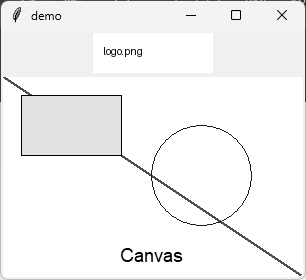
w.grid(row=0, column=1,
padx=5, pady=5, # khoảng cách ngoài; padx=(30, 5) = trái 30, phải 5
sticky="w", # dính cạnh: "w" trái, "e" phải, "we" kéo ngang, "nsew" lấp đầy
columnspan=2, # chiếm 2 cột
rowspan=2) # chiếm 2 dòng
window.columnconfigure(1, weight=1) # cột 1 giãn theo cửa sổ
window.rowconfigure(2, weight=1)
w.grid_forget() # ẩn widget[ cửa sổ khi chạy ]
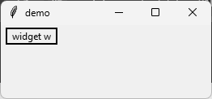
w.pack(side="left", padx=5) # "top" (mặc định) | "left" | "right" | "bottom"
w.pack(fill="x") # kéo ngang; "both" + expand=True: lấp đầy
w.pack(anchor="w") # canh trái
w.place(x=20, y=50) # tọa độ tuyệt đối
w.place(relx=0.5, rely=0.5, anchor="center") # giữa cửa sổpack và grid trong CÙNG một khung chứa → chương trình treo hoặc TclError.pack cho các Frame; bên TRONG mỗi Frame dùng grid (như Khung CRUD).x = tk.Entry(window).grid(...) → x là None! Phải tách 2 dòng: tạo, rồi x.grid(...).Frame rồi pack(side="left"), khỏi phải canh padx.tk.Tk(), nếu không sẽ lỗi "Too early to create variable".ten = tk.StringVar(value="") # chuỗi
so = tk.IntVar(value=0) # số nguyên (Checkbutton, Scale)
thuc = tk.DoubleVar() # số thực
co = tk.BooleanVar() # True / False
ten.get()
ten.set("An")
# Gắn vào widget: Entry/Combobox dùng textvariable=, còn lại dùng variable=
tk.Entry(window, textvariable=ten)
tk.Label(window, textvariable=ten) # Label tự cập nhật theo biến
def khi_doi(*args): # chạy mỗi khi biến thay đổi
print("Mới:", ten.get())
ten.trace_add("write", khi_doi)[ cửa sổ khi chạy ]
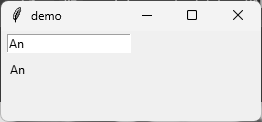
event.x, event.y (trong widget), event.x_root, event.y_root (trên màn hình), event.widget, event.keysym, event.char.| Chuỗi sự kiện | Khi nào |
|---|---|
<Button-1> / <Button-3> | Click chuột trái / chuột phải |
<Double-1> | Nhấp đúp |
<Return> / <Escape> | Phím Enter / Esc |
<KeyRelease> | Mỗi lần gõ 1 phím (tìm kiếm tức thì) |
<Control-s> | Ctrl + S |
<FocusOut> | Rời khỏi ô nhập |
<<ComboboxSelected>> | Chọn trong Combobox |
<<TreeviewSelect>> | Chọn dòng Treeview |
<<ListboxSelect>> | Chọn dòng Listbox |
def xu_ly(event=None): # bind truyền event, command thì không -> cho mặc định None
...
tk.Button(window, text="Tính", command=xu_ly)
window.bind("<Return>", xu_ly) # Enter ở bất kỳ đâu
txt.bind("<Return>", xu_ly) # chỉ khi con trỏ trong ô txt
# Truyền tham số: dùng lambda
tk.Button(window, text="+", command=lambda: tinh("+"))
txt.bind("<KeyRelease>", lambda e: load_data(txt.get())) # tìm kiếm khi đang gõ[ cửa sổ khi chạy ]
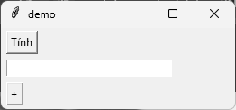
from datetime import datetime
def cap_nhat_gio():
lblGio.config(text=datetime.now().strftime("%H:%M:%S %d/%m/%Y"))
window.after(1000, cap_nhat_gio) # 1000 ms sau gọi lại chính nó
lblGio = tk.Label(window, font=("Arial", 14))
lblGio.grid(row=0, column=0)
cap_nhat_gio()[ cửa sổ khi chạy ]
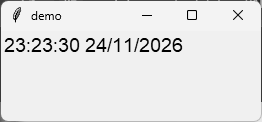
from tkinter import messagebox
messagebox.showinfo("Thông báo", "Lưu thành công")
messagebox.showerror("Lỗi", "Dữ liệu không hợp lệ")
if messagebox.askyesno("Xác nhận", "Bạn chắc chắn muốn xóa?"):
...| Hàm | Trả về |
|---|---|
showinfo / showwarning / showerror | "ok" |
askyesno | True / False ← dùng cho xác nhận Xóa / Thoát |
askokcancel | True / False |
askretrycancel | True / False |
askyesnocancel | True / False / None (Cancel) |
askquestion | CHUỖI "yes" / "no" (so sánh == "yes") |
from tkinter import simpledialog, filedialog, colorchooser
ten = simpledialog.askstring("Nhập", "Tên của bạn:") # None nếu bấm Cancel
tuoi = simpledialog.askinteger("Nhập", "Tuổi:", minvalue=0, maxvalue=120)
duong_dan = filedialog.askopenfilename(title="Chọn file",
filetypes=[("Text", "*.txt"), ("Tất cả", "*.*")])
if duong_dan: # "" nếu bấm Cancel
f = open(duong_dan, encoding="utf-8")
noi_dung = f.read()
f.close()
luu = filedialog.asksaveasfilename(defaultextension=".txt")
mau = colorchooser.askcolor()[1] # "#ff0000" hoặc Noneshow="headings" ẩn cột #0 thừa bên trái. Thanh cuộn ngang: orient="horizontal", command=tree.xview, xscrollcommand=.cot = ("ma", "ten", "diem")
tree = ttk.Treeview(frmTree, columns=cot, show="headings", height=10)
tree.heading("ma", text="Mã")
tree.heading("ten", text="Họ tên")
tree.heading("diem", text="Điểm")
tree.column("ma", width=80, anchor="center")
tree.column("ten", width=200, anchor="w")
tree.column("diem", width=60, anchor="e")
sb = ttk.Scrollbar(frmTree, orient="vertical", command=tree.yview)
tree.configure(yscrollcommand=sb.set)
tree.grid(row=0, column=0, sticky="nsew")
sb.grid(row=0, column=1, sticky="ns")[ cửa sổ khi chạy ]
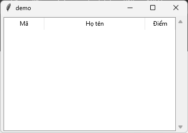
item()["values"] tự đổi "0912" thành số 912 (mất số 0) → đọc lại từ CSDL theo mã, hoặc dùng tree.set(id, cot).tree.insert("", "end", values=("A01", "An", 8.5))
tree.insert("", "end", iid="A01", values=row) # iid = khóa -> selection() trả về luôn mã
for dong in tree.get_children(): # xóa hết
tree.delete(dong)
chon = tree.selection() # tuple id dòng đang chọn
if chon:
values = tree.item(chon[0])["values"] # list giá trị của dòng
ma = values[0]
tree.set(chon[0], "ten") # 1 ô theo tên cột (giữ dạng chuỗi)
len(tree.get_children()) # số dòng
tree.item("A01", values=("A01", "An", 9)) # sửa trực tiếp 1 dòng
tree.delete(chon[0]) # xóa 1 dòng
tree.selection_remove(tree.selection()) # bỏ chọntree.tag_configure("chan", background="#eef3ff")
tree.tag_configure("truot", foreground="red")
i = 0
for row in rows:
tag = "chan" if i % 2 == 0 else ""
if row[2] < 5:
tag = "truot"
tree.insert("", "end", values=row, tags=(tag,))
i = i + 1def sap_xep(cot, giam=False):
ds = []
for i in tree.get_children():
ds.append((tree.set(i, cot), i))
ds.sort(reverse=giam) # cột số: ds.sort(key=lambda x: float(x[0]), ...)
vi_tri = 0
for gia_tri, i in ds:
tree.move(i, "", vi_tri)
vi_tri = vi_tri + 1
tree.heading(cot, command=lambda: sap_xep(cot, not giam)) # lần sau đảo chiều
for c in cot:
tree.heading(c, command=lambda c=c: sap_xep(c))tong = 0
for i in tree.get_children():
tong = tong + float(tree.set(i, "diem"))
so_dong = len(tree.get_children())
if so_dong > 0:
lblTK.config(text=f"Số SV: {so_dong} - Điểm TB: {tong / so_dong:.2f}")
f = open("danhsach.txt", "w", encoding="utf-8")
for i in tree.get_children():
values = tree.item(i)["values"]
dong = []
for v in values:
dong.append(str(v))
f.write(";".join(dong) + "\n")
f.close()
messagebox.showinfo("Xuất file", "Đã lưu danhsach.txt")import sqlite3
con = sqlite3.connect("ql.db") # chưa có file thì tự tạo
cur = con.cursor()
cur.execute("""CREATE TABLE IF NOT EXISTS sanpham(
id INTEGER PRIMARY KEY AUTOINCREMENT, -- tự tăng
ma TEXT UNIQUE NOT NULL, -- không trùng, không rỗng
ten TEXT,
gia REAL DEFAULT 0,
soluong INTEGER)""")
con.commit()| Kiểu | Dùng cho |
|---|---|
TEXT | chữ, mã, SĐT (giữ số 0), ngày |
INTEGER | số nguyên |
REAL | số thực (giá, điểm) |
con.commit(). SELECT thì không cần.# THÊM: số dấu ? = số giá trị
cur.execute("INSERT INTO sinhvien VALUES (?, ?, ?)", (ma, ten, diem))
cur.execute("INSERT INTO sinhvien(ma, ten) VALUES (?, ?)", (ma, ten)) # chỉ vài cột
con.commit()
# ĐỌC
cur.execute("SELECT * FROM sinhvien")
rows = cur.fetchall() # list các tuple, [] nếu rỗng
cur.execute("SELECT * FROM sinhvien WHERE ma = ?", (ma,)) # (ma,) CÓ dấu phẩy!
row = cur.fetchone() # 1 tuple hoặc None
# SỬA
cur.execute("UPDATE sinhvien SET ten = ?, diem = ? WHERE ma = ?", (ten, diem, ma))
con.commit()
# XÓA
cur.execute("DELETE FROM sinhvien WHERE ma = ?", (ma,))
con.commit()
cur.rowcount # số dòng vừa bị sửa/xóa (0 = không tìm thấy)
con.close()LIKE chỉ không phân biệt hoa/thường với chữ KHÔNG dấu: tìm "bình" không ra "Bình". Muốn chắc ăn: đọc hết rồi lọc bằng Python tu.lower() in ten.lower().tu = txtTim.get().strip()
cur.execute("SELECT * FROM sinhvien WHERE ten LIKE ?", ("%" + tu + "%",)) # chứa chuỗi
cur.execute("SELECT * FROM sinhvien WHERE ten LIKE ?", (tu + "%",)) # bắt đầu bằng
cur.execute("SELECT * FROM sinhvien WHERE diem >= ? AND khoa = ?", (5, "CNTT"))
cur.execute("SELECT * FROM sinhvien ORDER BY diem DESC, ten ASC")
cur.execute("SELECT * FROM sinhvien ORDER BY diem DESC LIMIT 3") # top 3
cur.execute("SELECT COUNT(*), AVG(diem), MAX(diem), MIN(diem), SUM(diem) FROM sinhvien")
dem, tb, cao, thap, tong = cur.fetchone()
cur.execute("SELECT khoa, COUNT(*) FROM sinhvien GROUP BY khoa")
for khoa, so in cur.fetchall():
print(khoa, so)
cur.execute("SELECT * FROM sinhvien WHERE ma = ?", (ma,))
if cur.fetchone() is not None:
messagebox.showerror("Lỗi", "Mã đã tồn tại") # kiểm tra trùng không cần trytry:
cur.execute("INSERT INTO sinhvien VALUES (?, ?, ?)", (ma, ten, diem))
con.commit()
except sqlite3.IntegrityError: # trùng PRIMARY KEY / UNIQUE, vi phạm NOT NULL
messagebox.showerror("Lỗi", "Mã đã tồn tại!")
except sqlite3.OperationalError as e: # sai tên bảng/cột, sai cú pháp SQL, DB bị khóa
messagebox.showerror("Lỗi SQL", str(e))cur.execute("""CREATE TABLE IF NOT EXISTS lop(malop TEXT PRIMARY KEY, tenlop TEXT)""")
cur.execute("""CREATE TABLE IF NOT EXISTS sv(ma TEXT PRIMARY KEY, ten TEXT, malop TEXT,
FOREIGN KEY(malop) REFERENCES lop(malop))""")
cur.execute("""SELECT sv.ma, sv.ten, lop.tenlop
FROM sv JOIN lop ON sv.malop = lop.malop
WHERE lop.malop = ?""", (malop,))%s (không phải ?), AUTO_INCREMENT thay cho AUTOINCREMENT, kiểu VARCHAR(50).import mysql.connector # pip install mysql-connector-python
con = mysql.connector.connect(host="localhost", user="root", password="", database="qlsv")
cur = con.cursor()
cur.execute("INSERT INTO sinhvien VALUES (%s, %s, %s)", (ma, ten, diem)) # %s thay cho ?
con.commit()
try:
...
except mysql.connector.IntegrityError:
messagebox.showerror("Lỗi", "Mã đã tồn tại!")s = txt.get().strip()
s == "" # rỗng
s.isdigit() # toàn chữ số (không dấu -, không dấu .)
len(s) == 10 and s.isdigit() and s[0] == "0" # SĐT 10 số bắt đầu bằng 0
len(s) == 6 and s[0] == "A" and s[1:].isdigit() # mã A + 5 số
s.replace(" ", "").isalpha() # họ tên chỉ có chữ (có dấu tiếng Việt vẫn đúng)
s.count("@") == 1 and "." in s.split("@")[1] # email đơn giản
len(s) >= 6 # mật khẩu đủ 6 ký tựdef luu():
try:
tuoi = int(txtTuoi.get())
diem = float(txtDiem.get().replace(",", ".")) # cho phép nhập 7,5
if tuoi <= 0 or not (0 <= diem <= 10):
raise ValueError # tự ném lỗi để nhảy vào except
except ValueError:
messagebox.showerror("Lỗi", "Tuổi > 0, điểm từ 0 đến 10")
txtTuoi.focus()
return # dừng, không lưu
# ... lưu dữ liệu ...import re
re.fullmatch(r"A\d{5}", s) # A45371
re.fullmatch(r"0\d{9}", s) # SĐT 10 số bắt đầu 0
re.fullmatch(r"(03|05|07|08|09)\d{8}", s) # SĐT di động VN
re.fullmatch(r"[\w.]+@\w+(\.\w+)+", s) # email
re.fullmatch(r"\d{2}/\d{2}/\d{4}", s) # dd/mm/yyyy (chỉ kiểm tra dạng)
re.fullmatch(r"[A-Z]{2}\d{3}", s) # SP001 kiểu 2 chữ hoa + 3 số
re.fullmatch(r"\d+(\.\d+)?", s) # số thực dương
re.fullmatch(r"\d{12}", s) # CCCD 12 số
if not re.fullmatch(r"0\d{9}", s): # None = sai
messagebox.showerror("Lỗi", "SĐT không hợp lệ")| Ký hiệu | Nghĩa |
|---|---|
\d \w \s | chữ số / chữ-số-_ / khoảng trắng |
. | 1 ký tự bất kỳ (\. = dấu chấm thật) |
+ * ? | ≥1 lần / ≥0 lần / 0-1 lần |
{5} {2,4} | đúng 5 / từ 2 đến 4 lần |
[abc] [A-Z] [^0-9] | 1 trong / khoảng / KHÔNG phải |
^ $ | đầu / cuối chuỗi (dùng re.match). re.fullmatch = khớp cả chuỗi |
(a|b) | a hoặc b |
from datetime import datetime, date
def tinh_tuoi():
try:
ns = datetime.strptime(txtNS.get(), "%d/%m/%Y") # 31/02/2000 -> ValueError
except ValueError:
messagebox.showerror("Lỗi", "Ngày sinh dạng dd/mm/yyyy")
return
hom_nay = date.today()
tuoi = hom_nay.year - ns.year - ((hom_nay.month, hom_nay.day) < (ns.month, ns.day))
so_ngay = (datetime.now() - ns).days
return tuoi
datetime.now().strftime("%d/%m/%Y %H:%M") # "24/11/2026 20:15"| Viết | Ra | Ghi chú |
|---|---|---|
f"{1234567:,}" | 1,234,567 | phân cách hàng nghìn |
f"{1234567.8:,.0f}" | 1,234,568 | số thực, 0 số lẻ |
f"{x:,.0f}".replace(",", ".") | 1.234.568 | kiểu Việt Nam |
f"{3.14159:.2f}" | 3.14 | 2 chữ số thập phân |
f"{0.256:.1%}" | 25.6% | phần trăm |
f"{7:03d}" | 007 | đệm số 0 (mã SP007) |
f"{'An':<10}|" | An | | canh trái 10 ký tự (> phải, ^ giữa) |
round(2.675, 2) / int(7.9) | 2.67 / 7 | làm tròn / bỏ phần lẻ |
s = " nguyễn văn an "
s.strip() # "nguyễn văn an" (bỏ khoảng trắng 2 đầu)
s.strip().title() # "Nguyễn Văn An" (chuẩn hóa họ tên)
s.upper() / s.lower()
" ".join(s.split()) # bỏ khoảng trắng thừa ở giữa
s.split() # ["nguyễn", "văn", "an"] -> s.split()[-1] = tên
"a,b,c".split(",") # ["a", "b", "c"]
", ".join(["a", "b"]) # "a, b"
s.replace("a", "b")
s.find("văn") # vị trí, -1 nếu không có
"văn" in s # True / False
s.count("n")
s.startswith("ng") / s.endswith("an")
s[::-1] # đảo chuỗi
s[0], s[-1], s[1:4] # ký tự đầu, cuối, cắt
len(s)
str(123), int("123"), float("1.5")# Đọc tất cả dòng -> list, bỏ dòng trống
ds = []
with open("khoa.txt", encoding="utf-8") as f: # with: tự đóng file
for dong in f:
if dong.strip() != "":
ds.append(dong.strip())
noi_dung = open("a.txt", encoding="utf-8").read() # đọc cả file thành 1 chuỗi
with open("ketqua.txt", "w", encoding="utf-8") as f: # "w" ghi đè, "a" ghi thêm cuối
f.write("Dòng 1\n")
f.writelines(["a\n", "b\n"])
import os
if os.path.exists("khoa.txt"): # kiểm tra trước khi đọc
...
try:
f = open("data.txt", encoding="utf-8")
except FileNotFoundError:
messagebox.showerror("Lỗi", "Không tìm thấy file")# sanpham.txt: SP01;Bút bi;5000
ds_sp = []
with open("sanpham.txt", encoding="utf-8") as f:
for dong in f:
ma, ten, gia = dong.strip().split(";")
ds_sp.append((ma, ten, float(gia)))
import csv
with open("ds.csv", "w", newline="", encoding="utf-8-sig") as f: # utf-8-sig: Excel đọc được tiếng Việt
w = csv.writer(f)
w.writerow(["Mã", "Tên", "Điểm"])
w.writerows(rows)
with open("ds.csv", encoding="utf-8-sig") as f:
for row in csv.reader(f):
print(row)
import json
with open("data.json", "w", encoding="utf-8") as f:
json.dump(danh_sach, f, ensure_ascii=False, indent=2)
with open("data.json", encoding="utf-8") as f:
danh_sach = json.load(f)def tinh_bac_thang(so, bac):
"""bac = [(số lượng bậc, đơn giá), ..., (None, đơn giá cuối)]"""
tien = 0
for so_bac, gia in bac:
if so <= 0:
break
dung = so if (so_bac is None or so < so_bac) else so_bac
tien += dung * gia
so -= dung
return tien
tinh_bac_thang(150, [(50, 1800), (50, 1900), (100, 2200), (None, 2800)]) # 295000
tinh_bac_thang(12, [(1, 12000), (29, 10000), (None, 8000)]) # taxi: 122000def giam_gia(tong): # mua >= 1tr giảm 10%, >= 500k giảm 5%
if tong >= 1_000_000:
return tong * 0.10
elif tong >= 500_000:
return tong * 0.05
return 0
def xep_loai(d):
if d >= 9: return "Xuất sắc"
elif d >= 8: return "Giỏi"
elif d >= 6.5: return "Khá"
elif d >= 5: return "Trung bình"
else: return "Yếu"
def diem_tb(qt, gk, ck): # hệ số 1-2-7 -> chia 10
return round(qt * 0.1 + gk * 0.2 + ck * 0.7, 2)
def bmi(can, cao_m):
chi_so = can / (cao_m ** 2)
if chi_so < 18.5: loai = "Gầy"
elif chi_so < 25: loai = "Bình thường"
elif chi_so < 30: loai = "Thừa cân"
else: loai = "Béo phì"
return round(chi_so, 2), loaiimport math
def bac_nhat(a, b): # ax + b = 0
if a == 0:
return "Vô số nghiệm" if b == 0 else "Vô nghiệm"
return f"x = {-b / a:g}"
def bac_hai(a, b, c): # ax² + bx + c = 0
if a == 0:
return bac_nhat(b, c)
delta = b * b - 4 * a * c
if delta < 0:
return "Vô nghiệm"
elif delta == 0:
return f"Nghiệm kép x = {-b / (2 * a):g}"
x1 = (-b + math.sqrt(delta)) / (2 * a)
x2 = (-b - math.sqrt(delta)) / (2 * a)
return f"x1 = {x1:g}, x2 = {x2:g}"import math
def la_nguyen_to(n):
if n < 2:
return False
for i in range(2, int(n ** 0.5) + 1):
if n % i == 0:
return False
return True
[x for x in range(1, 100) if la_nguyen_to(x)] # các số nguyên tố < 100
math.gcd(12, 18) # UCLN = 6
12 * 18 // math.gcd(12, 18) # BCNN = 36
math.factorial(5) # 120
def fibonacci(n): # n số đầu
ds = [0, 1]
while len(ds) < n:
ds.append(ds[-1] + ds[-2])
return ds[:n]
def tong_chu_so(n):
return sum(int(c) for c in str(abs(n)))
def la_hoan_hao(n): # 6 = 1+2+3
return n > 1 and sum(i for i in range(1, n) if n % i == 0) == n
def nam_nhuan(y):
return (y % 4 == 0 and y % 100 != 0) or y % 400 == 0
def so_ngay_trong_thang(t, y):
if t == 2:
return 29 if nam_nhuan(y) else 28
return 30 if t in (4, 6, 9, 11) else 31
str(12321) == str(12321)[::-1] # số / chuỗi đối xứng
bin(10), int("1010", 2) # nhị phân '0b1010' <-> 10ds = [int(x) for x in "5 3 8 1".split()] # nhập "5 3 8 1" -> list số
sum(ds), max(ds), min(ds), sum(ds) / len(ds)
sorted(ds), sorted(ds, reverse=True)
[x for x in ds if x % 2 == 0] # số chẵn
van_ban = "an an binh chi an"
dem = {}
for tu in van_ban.split():
dem[tu] = dem.get(tu, 0) + 1 # {'an': 3, 'binh': 1, 'chi': 1}
max(dem, key=dem.get) # từ xuất hiện nhiều nhất
from collections import Counter
Counter(van_ban.split()).most_common(2) # [('an', 3), ('binh', 1)]def tinh_luong(luong_cb, he_so, phu_cap, ngay_cong):
luong = luong_cb * he_so * ngay_cong / 26 + phu_cap
bao_hiem = luong_cb * he_so * 0.105 # BHXH+BHYT+BHTN 10.5%
return luong - bao_hiem
def hoa_don(ds_hang): # [(tên, số lượng, đơn giá), ...]
tong = 0
for ten, sl, gia in ds_hang:
tong += sl * gia
vat = tong * 0.1
return tong, vat, tong + vat
c_sang_f = lambda c: c * 9 / 5 + 32
f_sang_c = lambda f: (f - 32) * 5 / 9
usd_sang_vnd = lambda usd, ty_gia=25000: usd * ty_giads = [3, 1, 2]
ds.append(4); ds.insert(0, 9); ds.remove(9); ds.pop(); ds.pop(0)
ds.sort(); ds.sort(reverse=True); ds.index(2); ds.count(2); len(ds)
ds[0], ds[-1], ds[1:3], ds[::-1]
3 in ds
t = (1, "An", 8.5) # tuple: không sửa được
ma, ten, diem = t # tách giá trị
sv = {"ma": "A01", "ten": "An"}
sv["diem"] = 9 # thêm / sửa
sv.get("lop", "Chưa có") # đọc an toàn
del sv["diem"]
for k, v in sv.items():
print(k, v)
ds_sv = [{"ten": "An", "diem": 8}, {"ten": "Bình", "diem": 6}]
sorted(ds_sv, key=lambda x: x["diem"], reverse=True) # sắp theo điểm
max(ds_sv, key=lambda x: x["diem"])["ten"] # người cao nhất
s = {1, 2, 2, 3} # set: tự bỏ trùng -> {1, 2, 3}
list(set(ds)) # bỏ phần tử trùngfor i in range(1, 11, 2): # 1 3 5 7 9 (range(đầu, cuối-không-lấy, bước))
print(i, end=" ")
for i, ten in enumerate(["An", "Bình"], start=1):
print(i, ten)
for ten, diem in zip(["An", "Bình"], [8, 6]):
print(ten, diem)
while True:
s = input("Nhập số (q để thoát): ")
if s == "q":
break
if not s.isdigit():
continue
def tinh(a, b=2, *so, **tuy_chon): # tham số mặc định, nhiều tham số
return a + b, a * b # trả về nhiều giá trị (tuple)
tong, tich = tinh(3)
binh_phuong = [x * x for x in range(5)]
chan = [x for x in range(10) if x % 2 == 0]try:
x = int(input("Số: "))
kq = 10 / x
except ValueError:
print("Không phải số")
except ZeroDivisionError:
print("Chia cho 0")
except Exception as e: # mọi lỗi khác
print("Lỗi:", e)
else:
print("Không lỗi:", kq) # chỉ chạy khi không có lỗi
finally:
print("Luôn chạy")
if x < 0:
raise ValueError("Số phải dương") # tự ném lỗi| Lỗi | Khi nào |
|---|---|
ValueError | int("abc") |
ZeroDivisionError | chia 0 |
IndexError | list vượt chỉ số |
KeyError | dict không có khóa |
TypeError | "a" + 1 |
NameError | tên biến chưa có / gõ sai |
FileNotFoundError | không thấy file |
AttributeError | None.get(), sai tên method |
class Nguoi:
so_luong = 0 # thuộc tính lớp (dùng chung)
def __init__(self, ten, tuoi): # hàm khởi tạo
self.ten = ten # thuộc tính đối tượng
self.tuoi = tuoi
self.__cccd = "" # __ = private
Nguoi.so_luong += 1
def gioi_thieu(self):
return f"{self.ten}, {self.tuoi} tuổi"
def __str__(self): # print(obj) sẽ ra chuỗi này
return self.gioi_thieu()
class SinhVien(Nguoi): # kế thừa
def __init__(self, ten, tuoi, ma, diem):
super().__init__(ten, tuoi) # GỌI init của lớp cha
self.ma = ma
self.diem = diem
def gioi_thieu(self): # ghi đè (override)
return super().gioi_thieu() + f" - {self.ma} - {self.xep_loai()}"
def xep_loai(self):
return "Giỏi" if self.diem >= 8 else "Khá" if self.diem >= 6.5 else "TB"
ds = [SinhVien("An", 20, "A01", 8.5), SinhVien("Bình", 21, "A02", 6)]
for sv in ds:
print(sv) # gọi __str__
tot_nhat = max(ds, key=lambda sv: sv.diem)
isinstance(ds[0], Nguoi) # True
Nguoi.so_luong # 2class SanPham:
def __init__(self, ten, gia):
self.ten = ten
self.gia = gia # đi qua setter bên dưới
@property
def gia(self):
return self._gia
@gia.setter
def gia(self, gt):
if gt < 0:
raise ValueError("Giá không âm")
self._gia = gt
sp = SanPham("Bút", 5000)
sp.gia = 6000 # OK| Thông báo / hiện tượng | Nguyên nhân | Sửa |
|---|---|---|
'NoneType' object has no attribute 'get' | x = tk.Entry(...).grid(...): grid() trả về None | Tách: x = tk.Entry(...) rồi x.grid(...) |
Chương trình treo / cannot use geometry manager grid inside . which already has slaves managed by pack | Trộn pack và grid trong cùng khung | Mỗi khung chỉ 1 kiểu; dùng Frame con |
| Hàm chạy ngay khi mở, bấm nút không chạy | command=ham() | command=ham hoặc command=lambda: ham(x) |
Incorrect number of bindings supplied | Số ? ≠ số giá trị, hoặc viết (ma) thay vì (ma,) | Đếm lại ?; tuple 1 phần tử cần dấu phẩy |
table X has 6 columns but 5 values were supplied | INSERT thiếu giá trị | Thêm giá trị hoặc ghi rõ cột INSERT INTO t(a,b) VALUES (?,?) |
no such table / no such column | Sai tên, hoặc file .db cũ có cấu trúc khác | Sửa tên; xóa file .db cũ rồi chạy lại |
UNIQUE constraint failed | Trùng khóa chính | except sqlite3.IntegrityError |
| Tắt chương trình mở lại mất dữ liệu | Quên con.commit() | commit sau mọi INSERT/UPDATE/DELETE |
database is locked | File .db đang mở ở chương trình khác (DB Browser) | Đóng chương trình kia / Write Changes |
FileNotFoundError: khoa.txt | Chạy Python từ thư mục khác | os.chdir(os.path.dirname(os.path.abspath(__file__))) |
UnicodeDecodeError / chữ Việt lỗi font | Thiếu encoding | open(..., encoding="utf-8") |
module 'tkinter' has no attribute 'messagebox' | Chưa import | from tkinter import messagebox |
name 'END' is not defined | Dùng import tkinter as tk | tk.END hoặc "end" |
unknown option "-textvar" | Sai tên tùy chọn | textvariable, variable, command, values… |
Too early to create variable | Tạo StringVar trước tk.Tk() | Đưa xuống sau window = tk.Tk() |
| Tick 1 Checkbutton, tất cả cùng tick | Dùng chung 1 biến | Mỗi Checkbutton 1 IntVar riêng |
| Chọn được cả Nam lẫn Nữ | Radiobutton dùng 2 biến khác nhau | Dùng CHUNG 1 StringVar, khác value |
| SĐT mất số 0 khi chọn dòng Treeview | Treeview đổi chuỗi số sang int | Đọc lại từ CSDL theo mã; cột SĐT để TEXT |
| Ảnh không hiện | PhotoImage bị Python thu hồi | lbl.image = img (giữ tham chiếu) |
askquestion luôn đúng/sai | Trả về chuỗi "yes"/"no" | if ... == "yes" hoặc dùng askyesno |
IndentationError | Trộn tab và dấu cách / thụt lề sai | Thụt 4 dấu cách đồng nhất |
could not convert string to float: '' | Ô nhập rỗng | Bọc try/except ValueError |
| Sửa xong mã bị đổi / sửa sai dòng | Cho sửa khóa chính | Sau khi chọn dòng: txtMa.config(state="readonly") |
Không tìm thấy. Thử từ khác, ví dụ: entry, combobox, like, bac thang.